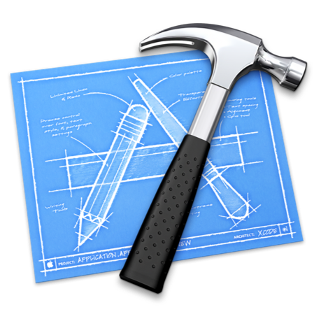

Installation on Windows
Command Line Interface
Download from Git for Windows or GitHub Desktop
Installation: CLI
Which operating system?
You may already have Git on your system! Open a terminal and enter this:
git --version
If it's already installed, you'll see a version -- otherwise, you'll see a warning.
Once you've installed Git, you'll want to configure it.
Installation on Linux
Command Line Interface
RPM-based Distribution
(e.g. Fedora, RHEL, CentOS)
sudo dnf install git-all
Debian-based Distribution
(e.g. Ubuntu)
sudo apt install git-all
Catch-all: Download at Git SCM
Installation on Macintosh
Command Line Interface
Warning
For Mac, Git is often paired with Xcode – an Apple-specific product. Xcode itself is a pretty big program (~8 GB). If you’re not looking to develop iOS applications, you won’t want the weight of Xcode on your computer.
Installation on Macintosh
Command Line Interface
You’ll want to make sure you install only the Git-related tools that Xcode provides and save yourself some space on your computer. This can be done via a simple command in the Terminal window. Simply enter:
git --version
If you do not already have Git installed, this command will prompt a pop-up, asking you if you would like to install it. Ensure you install just the Command Line Tools and NOT all of Xcode.